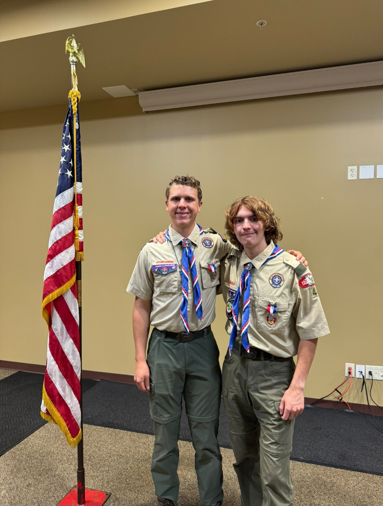

Eagle Scout
Becoming an Eagle Scout took seven years of commitment, growth, and showing up even when it was hard. I earned Eagle alongside my friend Elijah Jay (pictured), and that journey gave me a real love for the outdoors, practical life skills, and the confidence to lead. Through leadership roles in my troop, I learned how to plan, teach, and take responsibility for the people around me. 🧭